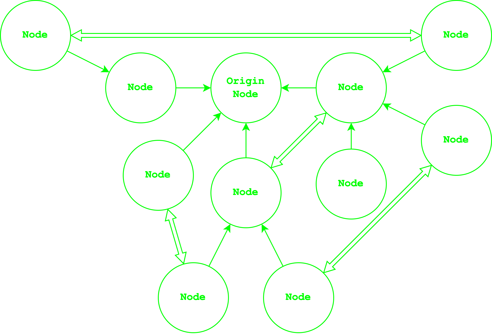
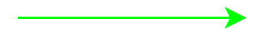
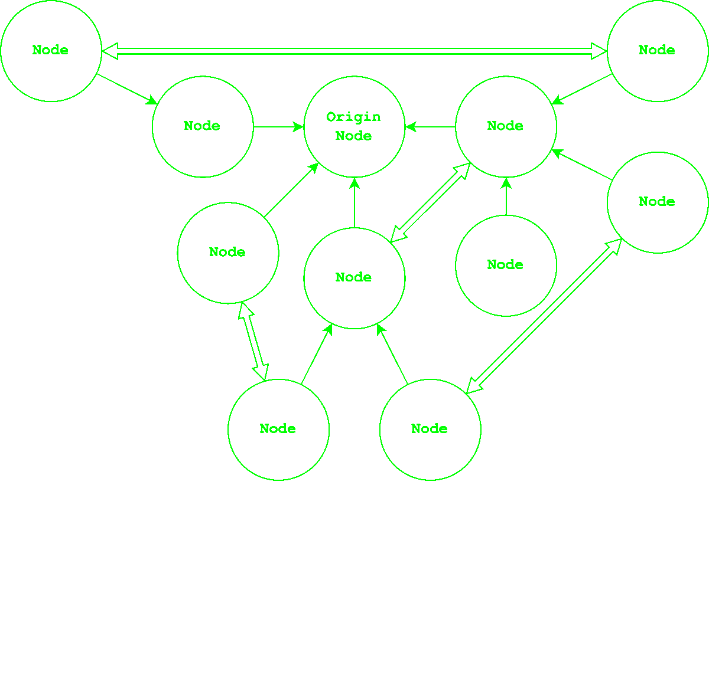
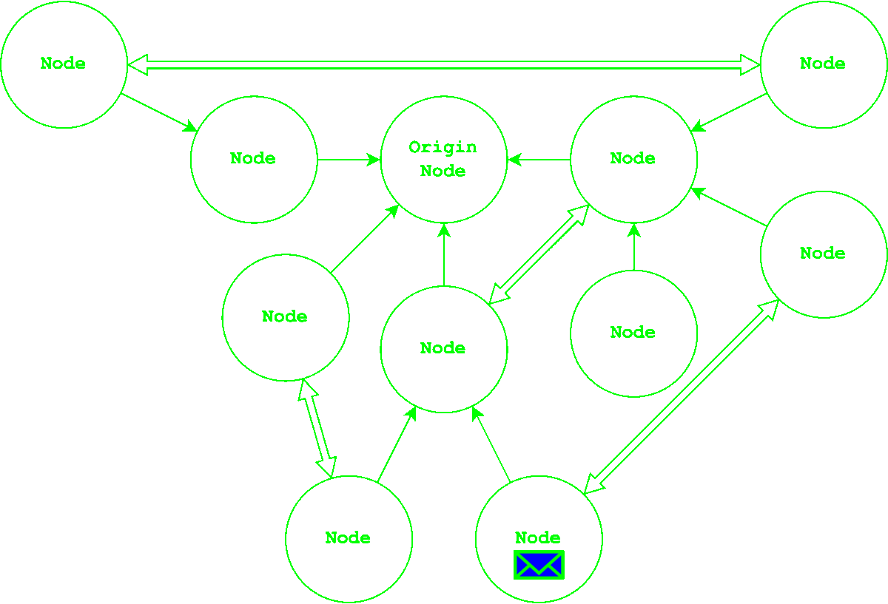

nislib is a C# library that makes it easy to create decentralized peer-to-peer networks. With nislib, you can manage all connectivity and communication on a low level, and all nodes in a network are equal.
Using nislib, you can easily add new features to your nodes using modules. Modules are like libraries that you can code and install to extend your nodes' functionality. For example, you could use a module to enable transactions between nodes. To code a module yourself, you're provided with events on a lower level, as well as the node object itself.
We believe that nislib is a powerful tool for anyone looking to create decentralized networks. Whether you're building a new application, or adding decentralized functionality to an existing one, nislib can help you get there faster.
Thank you for considering nislib for your project. We can't wait to see what you create with it!
This is what a small network could look like:

The regular arrows represent the familial connections. They go from the Child nodeParent node.
The double headed arrows () represent the direct connections which connect two nodes directly to each other. But we'll get into that later.
The familial connections form a tree structure making a rather simple, efficient but unstable network. In case of a node going offline, it's children will be disconnected from the network. The children will rely a fallback node list which they automatically create and update while being connected.
Additionally, they might be connected directly to other nodes which can be used as a fallback parent nodes.

Probably the most important type of communication is the broadcast allowing to initiate all other types of communication.
The broadcast is a message that is sent to all nodes in the network. It utilizes the familial connections to reach all nodes efficiently.
In order to broadcast a message, the original sender will send it to all of it's children and parent. Nodes receiving the broadcast will then send it to all of their children and parent except the node they recieved the broadcast from, and so on.

Broadcasts are used to send messages to all nodes in the network, but they can also be used to send messages to a specific node.